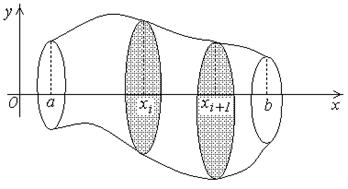
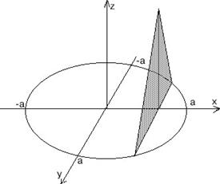

24.3.1. Вычисление объемов по заданным площадям поперечных сечений
Пусть имеем некоторое тело  .
Предположим, что известна площадь любого сечения этого тела плоскостью,
перпендикулярной оси
.
Предположим, что известна площадь любого сечения этого тела плоскостью,
перпендикулярной оси  .
.
.
Предположим, что известна площадь любого сечения этого тела плоскостью,
перпендикулярной оси .Эта площадь зависит от положения секущей плоскости, то
есть является функцией  : .
: .
: .Пусть непрерывна на  . Разобьем точками
деления ; через точки проведем
сечения, перпендикулярные оси . Площади соответствующих
поперечных сечений – .
. Разобьем точками
деления ; через точки проведем
сечения, перпендикулярные оси . Площади соответствующих
поперечных сечений – .
. Разобьем точками
деления ; через точки проведем
сечения, перпендикулярные оси . Площади соответствующих
поперечных сечений – .
Составим сумму: , , -
объем цилиндра с площадью основания и высотой .
Пусть , тогда (объем тела). С другой стороны, (-
интегральная сумма для непрерывной функции ).
Таким образом,
Вычисление объема
тела по заданной площади поперечного сечения
.
Найти объём тела, основание которого – круг радиусом  , а сечение плоскостью, перпендикулярной
фиксированному диаметру круга, есть равнобедренный треугольник высотой
, а сечение плоскостью, перпендикулярной
фиксированному диаметру круга, есть равнобедренный треугольник высотой  .
.
, а сечение плоскостью, перпендикулярной
фиксированному диаметру круга, есть равнобедренный треугольник высотой .Решение:
Выберем систему координат, начало которой совпадает с центром
круга.
Тогда сечение тела плоскостью, перпендикулярной оси , есть равнобедренный треугольник с основанием
и высотой ;
, есть равнобедренный треугольник с основанием
и высотой ;имеем
,
.
